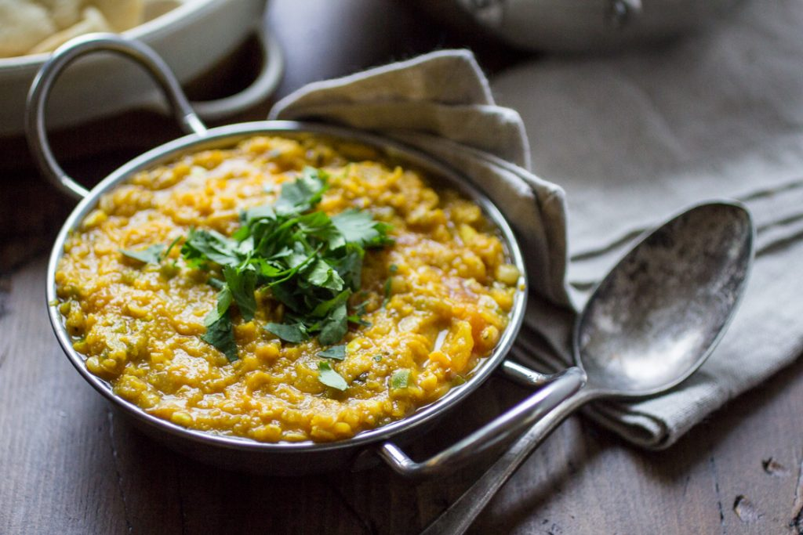

Dal

Description
The term dal is used for various soups prepared from dried, split pulses, such as lentils, peas, and beans.
These pulses are among the most important staple foods in South Asian countries, and form an important part of the cuisines of the Indian subcontinent.
Ingredients
- 1 cup red lentils - rinsed
- 3 cups room temperature water
- 1 tablespoon vegetable oil
- 1/2 teaspoon cumin seeds
- 1 2-inch cinnamon stick
- 1 cup diced yellow onion
- 1 green chili pepper - stemmed, seeded, and minced (serrano for spicy, jalapeno for more mild)
- 4 garlic cloves - minced
- 1 tablespoon finely minced ginger root
- 1/2 teaspoon ground turmeric
- 1/2 teaspoon ground cardamom
- 1/2 teaspoon paprika
- 3/4 teaspoon kosher salt
- 1 medium tomato - diced
- 1/2 lemon - juice of
- Chopped cilantro leaves for garnish
Steps
-
Place the rinsed lentils in a large saucepan along with room temperature water. Turn the heat to medium and allow the lentils to cook for 20 minutes. You can cook them covered or uncovered, just make sure that you turn down the heat if needed to keep them at a gentle simmer.
-
Meanwhile, heat the oil in a medium skillet set over medium heat. Add the cumin seeds and cinnamon stick; cook for 60 to 90 seconds, until fragrant.
-
Add the onion, green chili pepper, garlic, and ginger; cook for 4 to 5 minutes, until the onions are turning translucent.
-
Add the turmeric, cardamom, paprika, salt, and tomato to the pan. Cook until the tomato begins to fall apart, about 2 to 3 minutes. Discard the cinnamon stick.
-
Once the lentils are cooked, drain off any excess water that is on top of the lentils, but do not drain off all the water. Stir the spiced onion mixture into the pot of lentils. Add the lemon juice and stir well. Taste and add salt as needed. If it is too dry, then add some water. If it is too wet, then cook on low until it thickens to your liking.
-
Garnish with cilantro; serve with basmati rice and naan.